Operating Principles for Pick and Place (PnP) Alignments
This topic includes information about the theory of operations, or operating principles, for pick and place (PnP) alignments.
Full Auto-Alignment Method (Auto-Alignment) Operations
The instrument can be automatically aligned at many positions without operator interaction as long as the auto-alignment hardware is presented.
| Interfacing Device | Alignment Pin Type |
| Sample Wheel | Floating Pin |
| Supply Carriage | Floating Pin |
| Reagent Build Carriage | Floating Pin |
| Incubator Wheel | Floating Pin |
| Luminometer | RV or Floating Pin |
| Wash Wheel | Floating Pin or Fixed Pin |
- Find the pin using the grid hunting method.
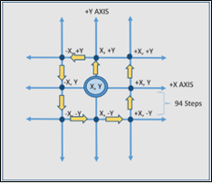
The instrument will have default alignment positions stored for all PnP to pin locations. Using a Z-Stall Move technique the instrument will hunt for Z-Axis slippage in a certain specified Z height range. Slippage is defined as the step difference between the encoder and motor position. As soon as the instrument finds the pin jump to step 2.
- Use Z-Axis Slippage to discover the limits of the pin surface.
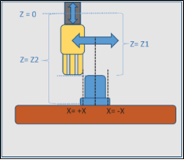
Once the pin position is found the collet uses the Z-Axis stall profile to move up and down while incrementing the PnP collet in the +X, -X, then +Y, -Y or +Theta and -Theta directions to determine the limits of the pin edges. After calculating the two direction centers, the PnP moves to the center position to test whether it can reach a proper Z height while triggering the vessel present sensor. If the sensor state is changed prior to recording slippage, then the alignment step is successful.
- Lift RV and implement X & Y/Theta "Window" Method.
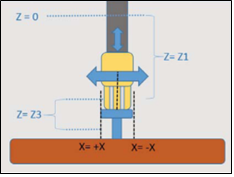
Starting with a successful alignment position the PnP moves up and down, checking to see that the floating pin is still within the collet while moving in the +X, -X and +Y, -Y or +Theta, -Theta directions.
- Conduct Ejector Pin Stall Moves to determine Z height.
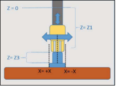
Once the center X and Y or theta positions are known, the ejector is fired and the Z-axis is moved down under the slippage profile until slippage is recorded. At this point the Z-position is recorded and an offset is applied so that the proper pin location can be recorded.
- Grab pin to verify alignment.
Both the PnP and intersecting alignment are homed and return to the calculated alignment position. The PnP grabs and lifts the pin, and verified the pin is in the collet with the Hall Effect sensor.
Semi Auto-Alignment Method (Manual Alignment) Operations
The instrument can be manually aligned by the operator moving the gantry to alignment points in the event auto-alignment is not available, or is unsuccessful.
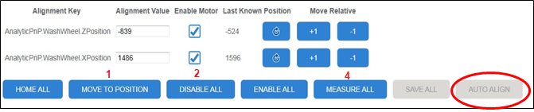
- Move to position.
After selecting the PnP gantry and alignment point requiring manual alignment, MOVE TO POSITION takes the gantry and intersecting device to the current alignment values moving on safe axes first.
- Disable motors.
DISABLE ALL disables all gantry and intersecting subsystem motors, allowing all axes to move freely. The encoders are still active and keeping track of movements.
- Align the gantry and intersecting subsystem to pin.
Move the PnP gantry and intersecting subsystem to optimize pin capture in the collet. Y, Z and θ/X alignments are all necessary.Note: The PnP encoders are often far from the collet. When manually moving the PnP gantry, actuate it as far from the collet as possible to reduce the possibility of misalignment.
- Measure the alignment position.
Once the optimal alignment is manually determined, MEASURE ALL takes a reading of the encoders, saves the alignment values, engages the motors, and returns the gantry and intersecting subsytem home.
- Verify alignment.
Using MOVE TO POSITION, verify manual alignment was successful by ensuring the pin is properly captured at the current alignment point. Repeat steps 2-5 as necessary.
Pick and Place Subsystem Alignment Sensitivity
The Pick and Place subsystem has been shown to pick up and place vessels mispositioned by +/-5 steps in the X or Z direction, but the allowable misposition between the encoder and motor is only 3 steps. Therefore, the Pick and Place subsystem tolerance enables capability to pick up and place vessels.
Sample PnP to Sample Wheel, Incubate/Analytic PnP to Incubate Wheel:
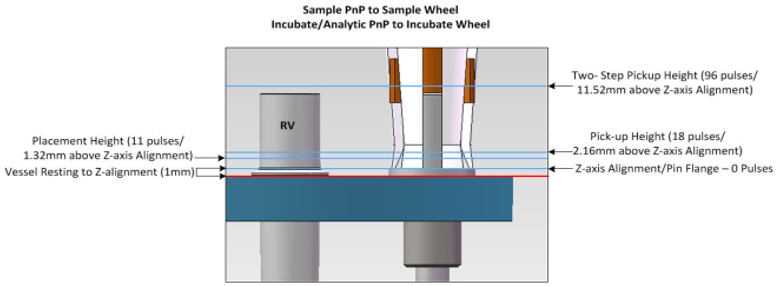
Sample PnP to Supply Carriage:
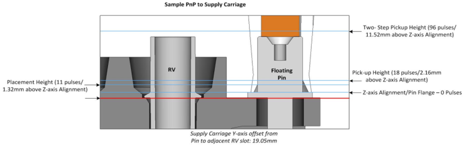
Sample/Incubate PnP to Reaction Build Carriages:
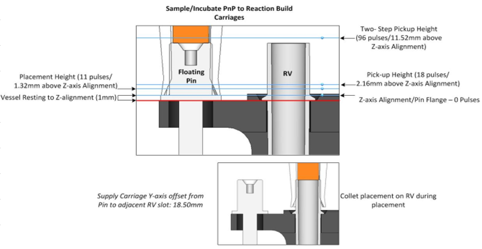
Analytic PnP to Wash Wheel:
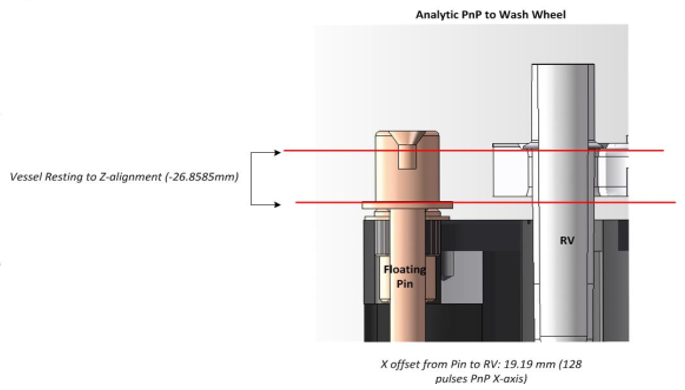
Analytic PnP to Luminometer
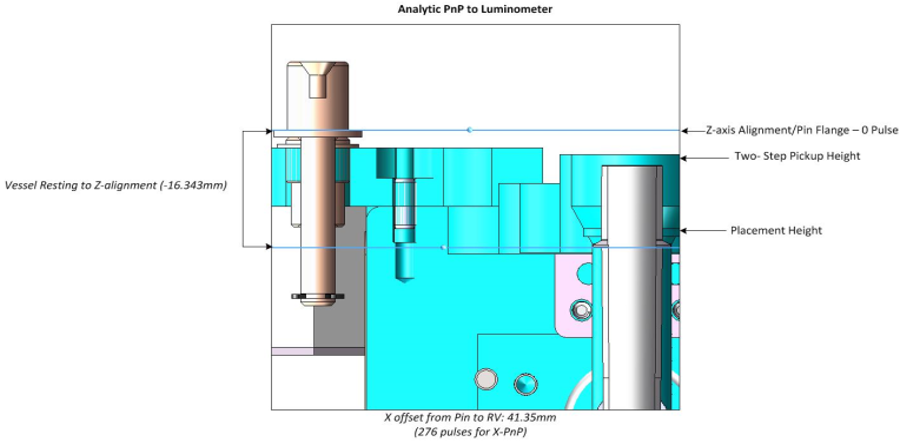
Collet Auto Alignment Operations:
- Auto Alignment Starting Position.
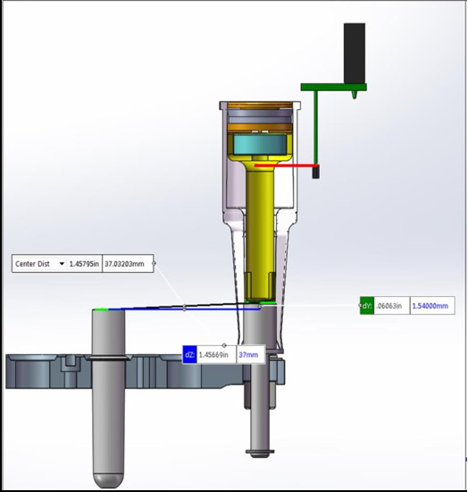
- Collet fingers bottomed out on pin flange.
- Hall-effect sensor reading true (vessel present).
- Measurement of top of pin to top of vessel included = 1.54mm.
- Auto Alignment first Z-axis action.
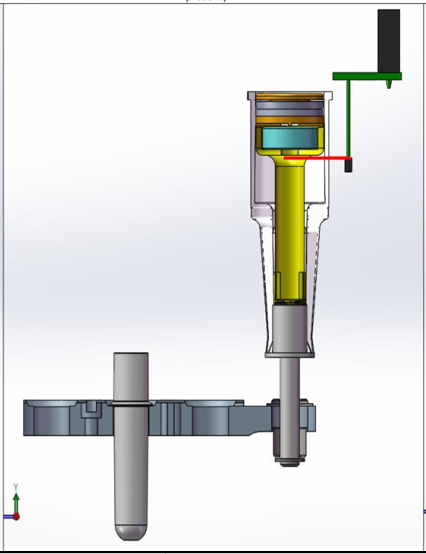
- Collet moves 75 steps up (9mm). If successful pick, pin moves up with collet.
- Hall-effect sensor reading true (vessel present) if successful pick. If unsuccessful pick, hall-effect sensor will read false (vessel not present).
- If pick-up from step 2 fails.
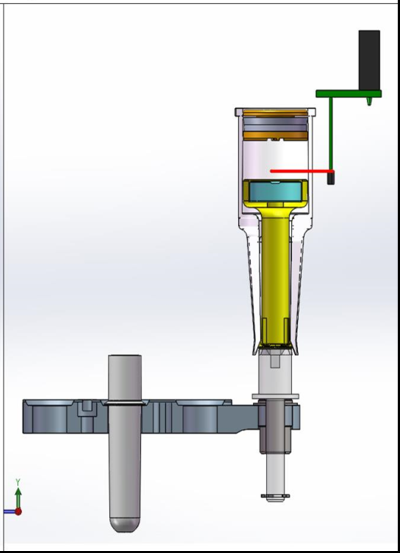
- Pin and ejector fail due to gravity, magnet falls below hall-effect sensor threshold to signify a "vessel present".
- Top of magnet is 2.35mm below top of hall-effect sensor.
- Auto Alignment second z-axis action.
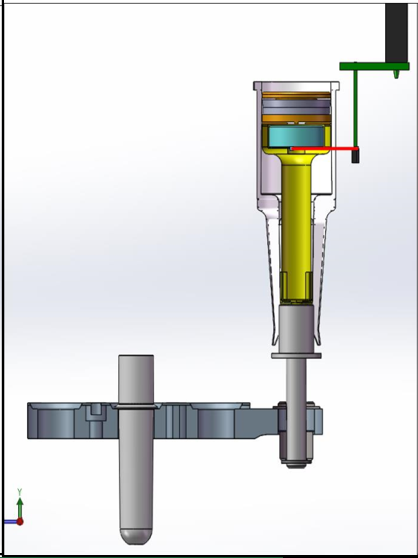
- Collet moves 15 more steps up (1.mm relative, total of 10.8mm). If successful pick, pin moves up with collet.
- Hall-effect sensor reading true (vessel present) if successful pick. This second moves is to reassure successful pick-up.
- If pick-up from step 4 fails.
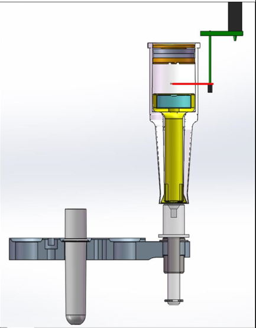
- Pin and ejector fail due to gravity, magnet falls below hall-effect sensor threshold to signify a "vessel present".
- Top of magnet is 3.87mm below top of hill-effect sensor.
Analytic Pick and Place to Wash Wheel with Fixed Pin Automated Alignments Operations
The analytic PnP alignment to the wash wheel differs from other PnP alignments due to the fixed pin on the wash wheel. The collet is unable to pick up and drop the pin but the fixed pin design does have a recessed bottom and outer feature which constrains the PnP collet.
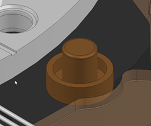
This was initially created to offset the previous jumping pin due to a mis-alignment to the wheel vessel holes. However test data showed manually aligning to the fixed pin reduced the amount of variability in alignments compared to the jumping pin and the design was adopted as a permanent part of APNP-->WW alignment.
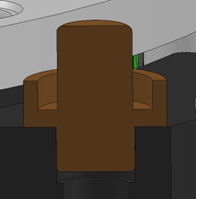
Aligning the APNP to the WW is similar to other pin locations in that the collet is seated on and around the pin but in this case it bottoms out at bottom surface between the pin feature and the outer ring. Once fully seated within the pin, X and Z APNP encoder values can be taken and the Prototype Alignment updated.
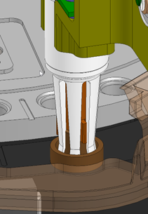
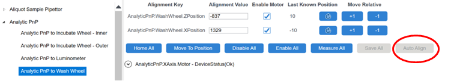
In addition, the APNP Y-axis alignment screw is manipulated (CW or CCW, -Y and +Y respectively) to position the collet for seating on the pin. Due to the tight tolerance of the outer ring the collet fingers will catch and prevent the collet from fully seating until the Y position is within the alignment window. Due to this manual adjustment, there was no Auto Align capability to the APNP for Wash Wheel alignment.
However a new semi-automated process can verify proper X and Z alignments stored with the Prototype Alignment menu and provide feedback to the operator for making Y adjustment screw corrections to get the optimal Y position of the X-gantry by sliding the PNP Upper Support Head on top of the PNP Base Tower. This motion is the basis for manual Y adjustments.
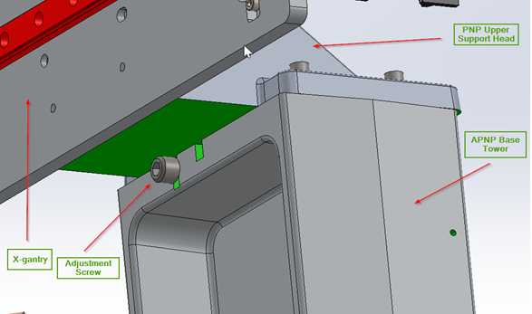
- Manually align PnP to WW alignment pin.
- (Auto alignment) APNP Z to wheel surface surrounding vessel holes.
- (Auto alignment) APNP X & WW coarse grid search for upper vessel hole depression.
- (Auto alignment) APNP X & WW fine window method for determining optimal WW theta and APNP X location of vessel hole.
This method relies on the WW axis being properly aligned beforehand. At the end of step 4, if the APNP Y plane location is off from the vessel hole position by >2 steps, a message will be presented in the Prototype Alignment screen giving instructions, in 1/4 revolution increments, to the operator to rotate the Y adjustment screw. The 'target' for the APNP is the vessel hole positioned relative to its own alignment which places the vessel holes under the dispense and aspirate stations of the WW.
APNP Z:
The analytic PnP performs 4 bump stalls using Z motor 'Bump' profile at 4 locations around the wheel. 2 locations on either side of the alignment interaction hole and 2 others at 120° intervals around the wheel. +2 steps is added to the median result to account for slippages past the top of plate contact. This establishes not only the baseline Z height for subsequent phases of the alignment procedure but also checks the pin-->plate Z offset and upon successful completion of the entire auto alignment procedure, the stored Z alignment value in Prototype Alignment may be overwritten if this Z alignment result indicates a correction is needed.
new APNPZ-->WW alignment value = APNPZ result - (zOffset/zMotorDistancePerStep)
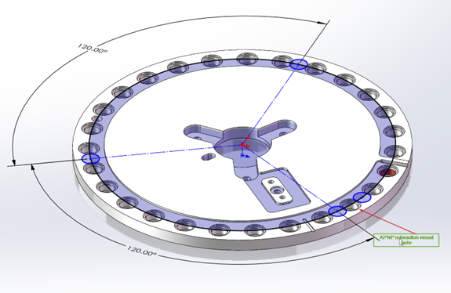
APNPX Coarse Grid Search:
The next step is to get an approximate vessel hole target location from a 3X3 grid search of the wash wheel plate. Starting from alignment pin values in Prototype Alignment and using offsets for X&Z PNP positioning, as well as wash wheel plate alignment - offset for wash wheel starting point, WW theta rotation and APNPX positions begin a search for the upper vessel hole depression.
They alternate movements to perform an outward spiraling 3X3 grid search (shown in the graph to the right) for a maximum of 25 iterations. APNPX Coarse Grid search can exit early if > 3 locations are found; however, even a single 'hit' is acceptable to move onto the next phase.
A vessel hole is 'found' when the PNPZ motor position at time of slippage > 1 differs from the top of plate result found in the APNP Z alignment test by > 3 steps. The entire depth of the vessel slot only spans about 6-7 steps (.76mm) so any result different from the top of the plate by > 3 indicates the PNP collet is at least halfway in the hole depression.
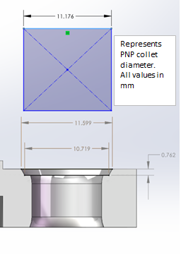
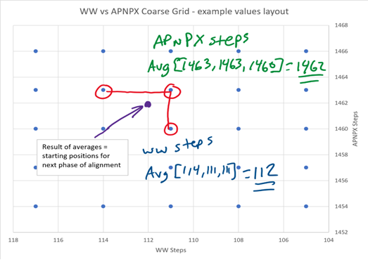
APNPX/Y Dynamic Fine Window Search:
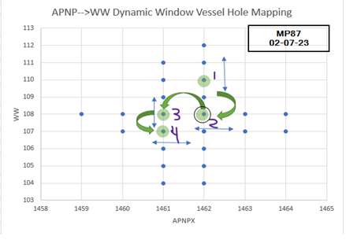
The final phase of APNP-->WW alignment process is a +/- window search. Starting locations for both APNPX and WW come from the result of the Coarse Grid Search (position 1).
This phase begins at the starting point and tests for a vessel hole in the same way the Coarse method searched for a vessel hole. Then the wash wheel moves in +1 step increments until holeFound transitions from True to False. Moving back to the origin, the wash wheel makes moves in -1 step increments following the same exit guidelines. The center of this window is now the new wash wheel starting point (position 2).
PNPX moves +1 steps after the wash wheel has positioned itself at this new location. After completing these moves with the above mentioned exit guidelines, it returns to its own starting position and does -1 step moves. The center of this window is now the new APNPX location (position 3).
The wash wheel repeats from this location to result in position 4 then PNPX makes 1 final +/- window and the result of these past 2 windows is the desired location for the APNPX to rendevous with the WW based on its current Y-axis position.
Compute APNPY Adjustment:
Output from Fine Dynamic Window method is compared to the target position from stored WW alignment value - 12 steps positioning offset. If this difference is > 2 steps (e.g. returned output = 112 and target = 109) then APNP Y adjustment is needed. Difference in steps is converted into CW or CCW rotation of the Y adjustment screw based on WW resolution (0.096 mm/step) and screw pitch (0.7mm/rev), then presented to operator in the alignment window as a fraction in 1/4 turn increments.
If the result is <= 2 steps from target, the alignment passes successfully and any needed updates to APNPX and APNPZ alignment values are made automatically.
Repeat:
If an adjustment is needed, the alignment routine must be repeated until alignment passes.